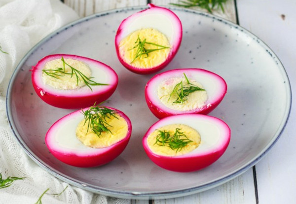

Home
Pickled Eggs and Beets

Description
Simple and Delicious beet pickled eggs that brings tradition and fun to your meals!
Ingredients
- 8 large eggs
- 1 (15-ounce) can sliced beets with liquid
- 1/2 cup white vinegar
- 1/2 cup white sugar
- 1/2 cup water
- teaspoon ground cinnamon (Optional)
Steps
- Gather the ingredients.
- Place eggs in a saucepan and cover with cold water. Bring water to a boil and immediately remove from heat. Cover and let eggs stand in hot water for 10 to 12 minutes. Remove from hot water, cool, and peel. Place eggs in a glass or plastic container.
- Combine beets, vinegar, sugar, water, and cinnamon in a saucepan. Bring to a boil; stir until sugar is dissolved. Pour over eggs. Cover and chill for 4 hours to overnight.